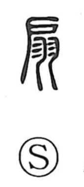

扇

Kun: ogi, aogu | On: sen
fan ・ folding fan ・ to fan ・ double door
Explanation
This character is a compound of 戶 (door) and 羽 (feathers, wings). In early lexicons it is explained as a door, with the feather component evoking two wings spread to either side—hence a double-leaf door. The meaning later shifted to handheld fans, embracing both the round uchiwa and the folding ōgi; the latter, called 摺疊扇, came into common use from the Yuan and Ming periods. Words such as 扇動 and 煽動, “to whip up” or incite, preserve the image of fanning a flame to make it flare, and led to the creation of 煽 for the act of stirring up.